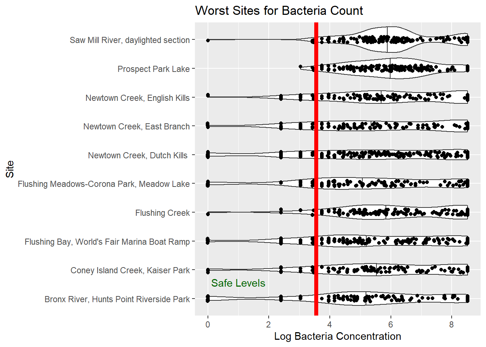
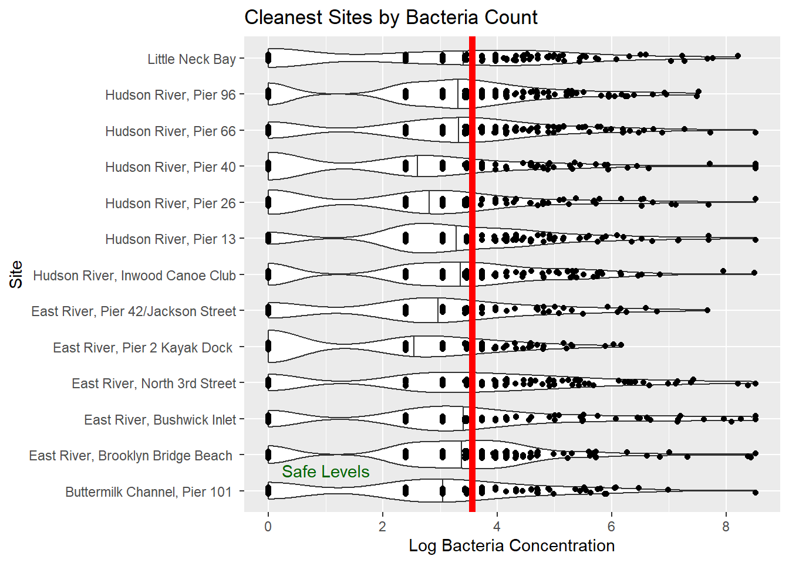
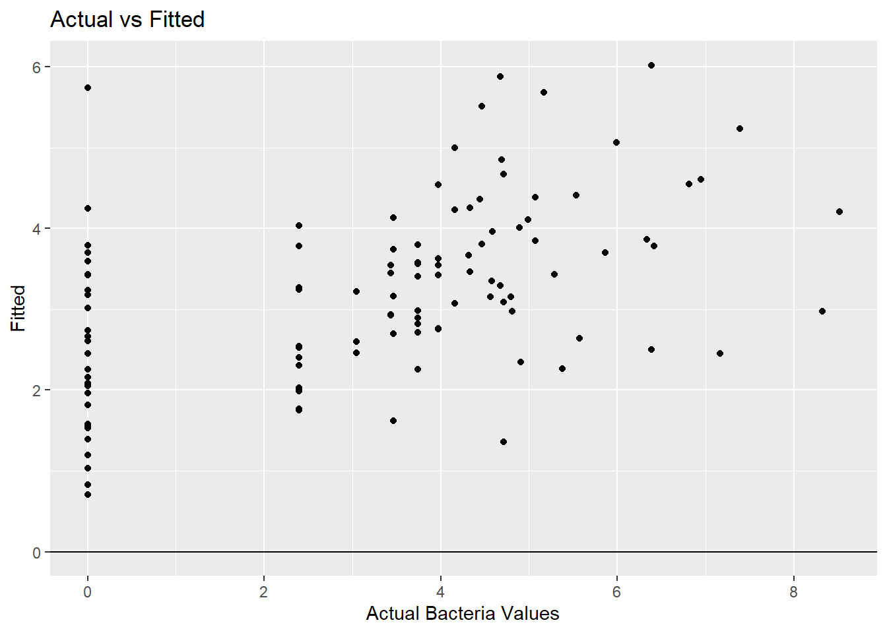

Exploring BOP WQ Data
Predicting Enterococci Levels in NYC Harbor
This document explores the relationship between weather, tides and water quality in the NYC Harbor. The data sources are the Billion Oyster Project (BOP), the Citizens’ Water Quality Testing Program and the NOAA.
In preview, I am not optimistic about the ability to predict Enterococci levels in the NYC Harbor with the available data. The data is noisy and the relationship between weather, tides and water quality weak. My suspicion is that individual sites are affected more by point sources of contaminants than by the variables we can easily measure.
Data
The main data source is the BOP water quality spreadsheet found here: BOP Water Quality Data I also used the NOAA data site for tide, temperature and rainfall data.
Feature Engineering
The BOP data includes time of last high tide. I thought I could get more granular by imputing the direction and strength of the tidal current at the time of the water sample. I used the NOAA tide data to find the previous slack tide time and level, then the next slack tide time and level.By determining where in the tide phase the sample was taken and the total change in water level for that phase, I impute the direction and strength of the tidal current when the sample was taken using this formula:
\[ CurrentSpeed = HighLowRangeFt * sin(\pi * \frac{HoursSinceLastTide}{TideDurationHrs}) \]
So the further we are from a slack tide, high or low, the faster the current will be. The bigger the change in water level during a tidal phase, the stronger the current will be. Ebb tides are negative values, flood tides are positive. CurrentSpeed is an index, not a real measurement.
I get the tides from the closest NOAA tide station to each water sampling site. Where the location of the sampling site is not known, I default to the Battery tide station at the bottom of Manhattan. This occurs when the name of the sampling site does not agree with any site name in the location meta data.
I chose to use just the weekly total rainfall and the one-day rainfall amounts. Obviously, we don’t know if the more of 1-day rain fell before or after the sample was taken.
The BOP data does not include temperature. I used the NOAA Central Park temperature for each sample day as a data feature. This is a (not very good) proxy for the water temperature but also for seasonality. This allows seasonality to be a continuous variable. Otherwise, “month” would be a categorical variable.
In the end I chose to the following features: SampleTime, Enterococci, TideHighLowRange, TideDurationHrs, HoursSinceLastTide, CurrentSpeed, OneDayRain, WeeklyRain and Temperature.
The bacteria levels are distributed in a lopsided way. The extreme high level is effectively infinity and conveys little information. Values above 5000 are only 5% of the observations and values below 500 are 82% of the observations.
I chose to cap the bacteria levels at 5000 and do a log transform to make the distribution more even.

Finally, since we are mostly interested in the warm weather months and there are very few samples in the winter, I filtered out samples taken when the NOAA temperature was below 50 degrees. As it turns out, this does improve the model fit a small amount.
Data Exploration
What are the distributions of all the variables? Note the tide level distribution are the levels at just the high and low tides.

What are the cleanest and most contaminated sites?


What is obvious is that even the cleanest sites have a lot of variation in bacteria levels. This might give us some hope that environmental factors might be more important than location in predicting bacteria levels.
Now let’s look at some trends over time. Sadly, the overall level of bacteria has not improved over time. Looking at temperature, there are no clear trends. There are a couple years where a lot of rainfall seems associated with more bacteria but other years contradict that.
Modeling
Looking at a pairwise correlation plot, we see that the variables are not highly correlated, which suggests good variable selection but, on the other hand, that the variables are not very predictive of bacteria levels.
Since we have all continuous variables a linear regression model should be appropriate.
Call:
lm(formula = bacteria ~ ., data = wq_adj_2)
Residuals:
Min 1Q Median 3Q Max
-7.1222 -1.2987 0.0021 1.5204 5.1260
Coefficients:
Estimate Std. Error t value Pr(>|t|)
(Intercept) 4.835293 0.226920 21.308 < 2e-16 ***
precip_wk 0.332464 0.018491 17.980 < 2e-16 ***
tide_level 0.016759 0.019837 0.845 0.398
hours_since_last 0.004652 0.011870 0.392 0.695
current 0.001249 0.014131 0.088 0.930
temperature_noaa -0.018321 0.002973 -6.163 7.36e-10 ***
precip_noaa 0.726332 0.060669 11.972 < 2e-16 ***
---
Signif. codes: 0 '***' 0.001 '**' 0.01 '*' 0.05 '.' 0.1 ' ' 1
Residual standard error: 2.298 on 11831 degrees of freedom
Multiple R-squared: 0.05194, Adjusted R-squared: 0.05146
F-statistic: 108 on 6 and 11831 DF, p-value: < 2.2e-16As it turns out, only rainfall and temperature are statistically significant. Tides are not. This scarcely matters because the model stinks. The R-squared is 0.05 and the residuals are not normally distributed.
Can we get better results if we run separate models for each site? Yes, but not much. The R-squared values are still very low. The best site has an R-squared of less than 0.25.

Call:
lm(formula = bacteria ~ ., data = .)
Residuals:
Min 1Q Median 3Q Max
-5.7435 -1.2056 0.3016 1.0528 5.3489
Coefficients:
Estimate Std. Error t value Pr(>|t|)
(Intercept) 7.79165 2.42621 3.211 0.001758 **
precip_wk 0.83987 0.24071 3.489 0.000712 ***
tide_level -0.18229 0.25299 -0.721 0.472813
hours_since_last 0.06245 0.12251 0.510 0.611293
current -0.26660 0.16834 -1.584 0.116309
temperature_noaa -0.07290 0.02948 -2.473 0.015013 *
precip_noaa 0.74464 0.57925 1.286 0.201463
---
Signif. codes: 0 '***' 0.001 '**' 0.01 '*' 0.05 '.' 0.1 ' ' 1
Residual standard error: 2.009 on 104 degrees of freedom
Multiple R-squared: 0.248, Adjusted R-squared: 0.2046
F-statistic: 5.716 on 6 and 104 DF, p-value: 3.611e-05